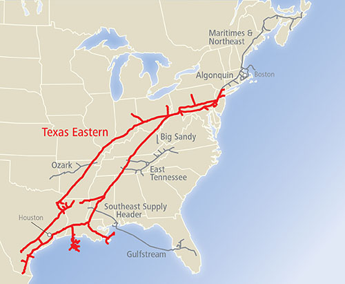

- Location: Gulf Coast to Northeast United States
- Length: 8,835 miles
- Capacity: 13.06 Bcf/d as peak day capacity ; approximately 74 Bcf of natural gas storage
- Ownership Interest: 100 percent Enbridge Inc.
- Operator: Enbridge Inc.
With 8,835 miles of pipeline, Texas Eastern Transmission connects Texas and the Gulf Coast with high demand markets in the northeastern United States, supplying fuel for electric generation facilities and helping to meet peak-day demands. Texas Eastern can transport 13.06 Bcf/d and offers approximately 74 Bcf of gas storage. Texas Eastern also connects to East Tennessee Natural Gas and Algonquin Gas Transmission.
Texas Eastern offers connections to the mid-Atlantic and Northeast market, individual customer service and staff support, plus the largest volume capacity expansions. Enbridge Inc. owns the storage field near the town of Accident, Maryland, and partially owns the Pennsylvania fields near Oakford (50 percent) and Leidy (25 percent). The proximity of these storage fields to our shippers provides a great deal of flexibility. The depleted reservoirs in use at Accident, Oakford and Leidy allow for "one turn" per year (an injection and withdrawal cycle that takes 12 months).
For assistance with operational problems or in an emergency, please call: Texas Eastern Transmission: 800-231-7794